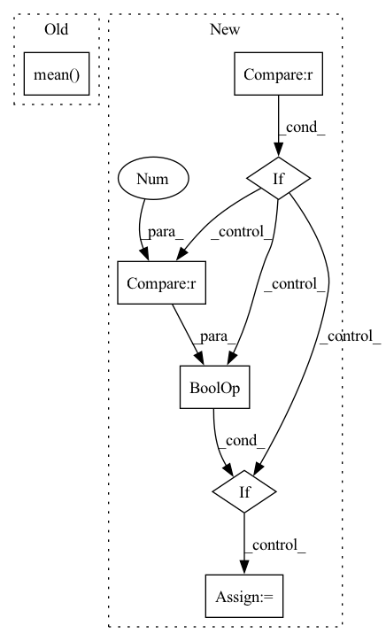

Pattern ID :14225
Before Change
batch_size = target_tensor.size(0)
if topk==1:
return input_tensor.eq(target_tensor).float().mean()
else:
_, pred = input_tensor.topk(topk)
pred = pred.t()
correct = pred.eq(target_tensor.reshape((1, -1)).expand_as(pred))After Change
if input_tensor.shape!=target_tensor.shape and topk==1:
raise ValueError("input shape {0} is not competable with target shape {1}".format(input_tensor.shape,target_tensor.shape))
input_mask=ones_like(input_tensor)
if isinstance(ignore_index, int) and 0 <= ignore_index < num_classes :
input_mask[input_tensor==ignore_index] = 0
elif isinstance(ignore_index, (list, tuple)):
for idx in ignore_index:
if isinstance(idx, int) and 0 <= idx < int_shape(output)[axis] :
input_mask[input_tensor == idx] = 0
batch_size = target_tensor.size(0)
if topk==1:In pattern: SUPERPATTERN
Frequency: 3
Non-data size: 7
Instances Fragment ID: 47256016
Project Name: allanyiin/trident
Commit Name: b3fa29c7fa2f3aa1ffdcb6381cebeede394c0e7b
Time: 2021-02-14
Author: allan@asiaminer.com.tw
File Name: trident/optims/pytorch_metrics.py
M Class Name: AnonimousClass
N Class Name: AnonimousClass
M Method Name: accuracy(6)
N Method Name: accuracy(5)
M Parent Class:
N Parent Class:
M File Name: trident/optims/pytorch_metrics.py
N File Name: trident/optims/pytorch_metrics.py
M Start Line: 73
M End Line: 73
N Start Line: 39
N End Line: 83
Before Change
def augment_positions(self, positions: Tensor):
if self.normalize:
positions -= torch.mean( rearrange(positions[~positions.isnan()],
"(b t) -> b t",
b=positions.size(0),
t=positions.size(1)),
axis=1, keepdim=True)
if self.training:
batch_size, n_tokens = positions.shape
After Change
delta_local = delta_local.uniform_(-epsilon,
epsilon)
delta_local = delta_local.to(positions.device)
if positions_delta is not None :
if torch.is_tensor(positions_delta) and len(positions_delta.shape) == 1 :
positions_delta = rearrange(positions_delta, "b -> b 1")
delta_local *= positions_delta
else:
delta_local = 0 Fragment ID: 47256007
Project Name: gcambara/cape
Commit Name: eed748019dd51304748859684a027af87ba5dbf7
Time: 2021-12-07
Author: guillermocambara@gmail.com
File Name: cape/cape.py
M Class Name: CAPE1d
N Class Name: CAPE1d
M Method Name: augment_positions(3)
N Method Name: augment_positions(2)
M Parent Class: nn.Module
N Parent Class: nn.Module
M File Name: cape/cape.py
N File Name: cape/cape.py
M Start Line: 61
M End Line: 80
N Start Line: 80
N End Line: 102
Before Change
batch_size = int_shape(target_tensor)[0]
if topk == 1:
return equal(input_tensor,target_tensor).mean()
else:
_,pred = input_tensor.topk(topk)
pred = cast(tf.transpose(pred),"float32")
target_tensor= cast(repeat_elements(expand_dims(target_tensor,0),topk,axis=0),"float32")After Change
raise ValueError("input shape {0} is not competable with target shape {1}".format(input_tensor.shape, target_tensor.shape))
input_mask=ones_like(input_tensor,dtype=input_tensor.dtype)
if isinstance(ignore_index, int) and 0 <= ignore_index < num_classes :
input_mask[input_tensor==ignore_index] = 0
elif isinstance(ignore_index, (list, tuple)):
for idx in ignore_index:
if isinstance(idx, int) and 0 <= idx < int_shape(output)[axis] :
input_mask[input_tensor == idx] = 0
batch_size = int_shape(target_tensor)[0]
if topk == 1: Fragment ID: 47256012
Project Name: allanyiin/trident
Commit Name: c626418b50134f22a37436b73a9e5b8b96d80f86
Time: 2021-02-14
Author: allan@asiaminer.com.tw
File Name: trident/optims/tensorflow_metrics.py
M Class Name: AnonimousClass
N Class Name: AnonimousClass
M Method Name: accuracy(6)
N Method Name: accuracy(5)
M Parent Class:
N Parent Class:
M File Name: trident/optims/tensorflow_metrics.py
N File Name: trident/optims/tensorflow_metrics.py
M Start Line: 40
M End Line: 71
N Start Line: 36
N End Line: 81